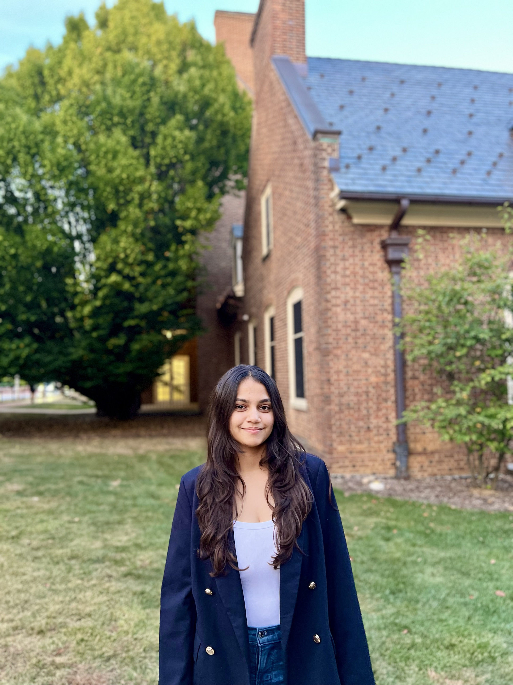

Meet your RA
I am here to help you navigate residence hall life, answer your questions, and make sure our floor actually feels like home instead of just a building you sleep in. If something is confusing, broken, or just weird, I would rather you ask me than sit with it.
I am an Applied Data Science major at Penn State, originally from Gujarat, India. I know what it feels like to arrive somewhere completely new and overwhelming, where you do not know a single person and everything takes twice as long to figure out. I have been there. So you can always come to me when you need help finding your footing.
When I am not on RA duty, you can find me doing yoga or Pilates, going for a run, listening to Taylor Swift, or working on tech projects with friends. I am also a huge foodie, especially when it comes to Asian food, and I am always looking for a new place to try. If you know a good spot near campus, my door is open.

Next: a few photos of me, and what an RA actually does.